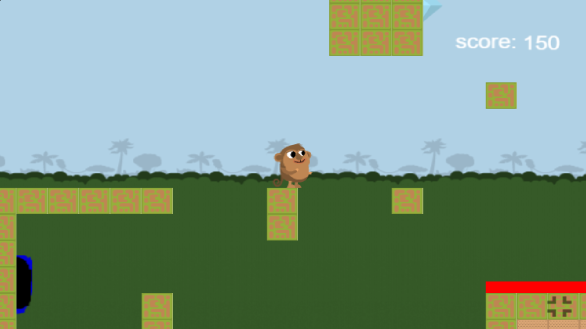
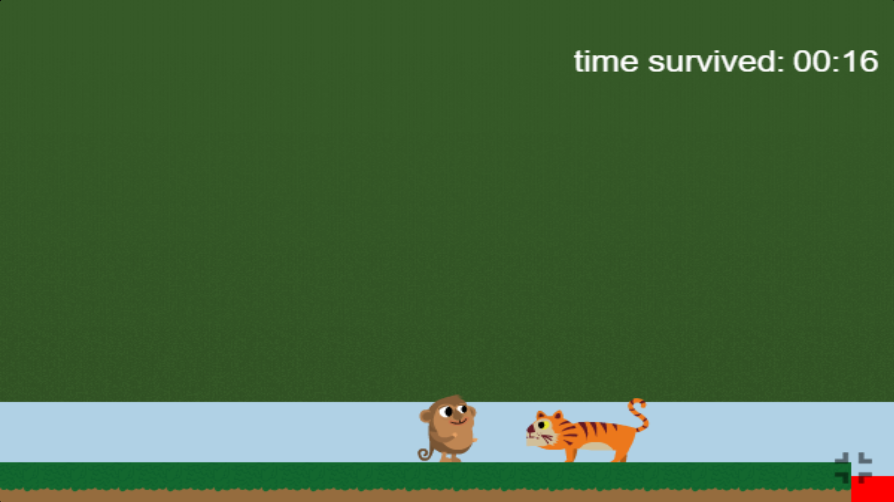
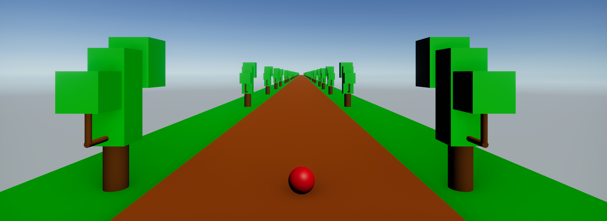
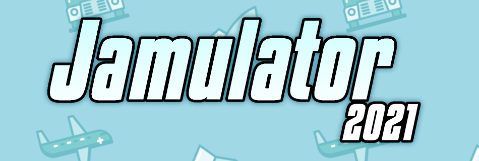
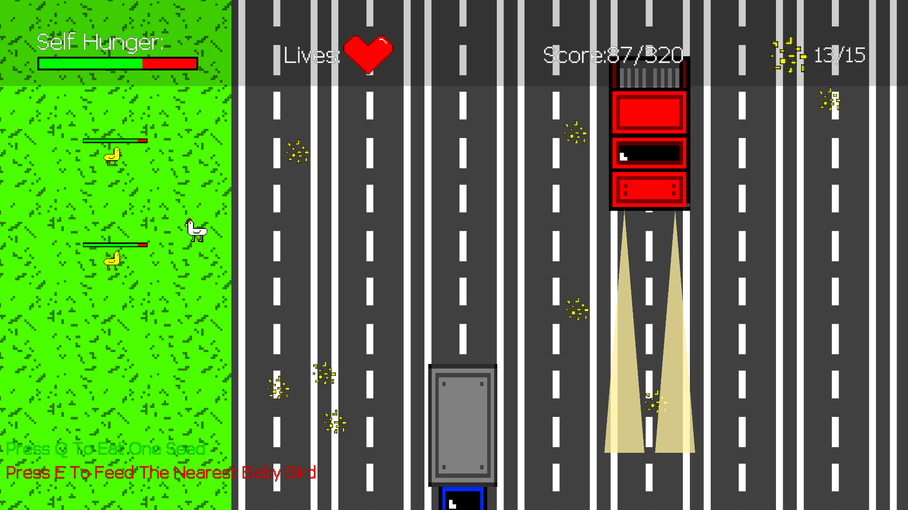
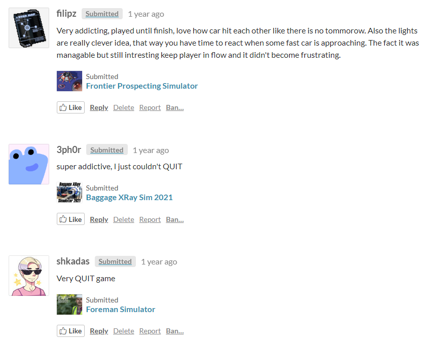
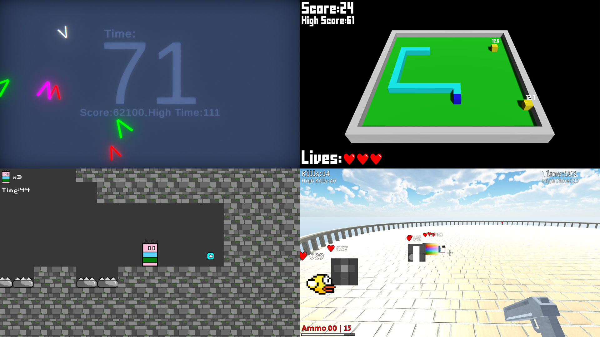

About Me
Hello!
I'm GuyMakesStuff, And I Like To Code.
I Have Always Had An Intrest In Computers And Other
Electronic Things, And Started Programming Years Ago,
As I Was Looking For Something To Do During Lockdown.
I Originally Begun Coding On An EDU Website Called "CodeMonkey",
Where I Have Learned The Basics Of Coding And Made My First Games.


I Wanted To Try Out Something New After A While, And In September 2020
I Discovered The Unity Engine Through Youtube Videos. So I Downloaded
The Engine And Begun Learning Through Youtube Tutorials How To Make More Advanced Games.
However, This Did Not Go As Planned As I Had A Hard Time Learning Due To The Hard Transition
From And EDU Website To A Proper Game Engine, And Those Games Were Crude Copy-Pastes From Tutorials
And Were Never Finished.
After A While Of Unfinished Projects, I Decided That I Was Too Ambitious With What I Tried To Do,
So In November, I Took On Myself A Smaller Project, Begun Learning Through Better Tutorials, And After 2-4 Days,
"Jungle Sphere" Was Finished. A Crude Joke Racing Game Made With The Brackeys "Make A Game" Series.

After A While Of Working On Another Unfinished Project, I Had An Idea:
"Hmm... What If I Took My Funny Jungle Sphere Game And Put It On Itch IO?
It Will Probably Be So Successfull, The Big Boy Youtubers Are Going To Play
This Game Because Of Its Absurdity, And I Will Become Famous!"
So, On January 7th 2021, I Have Created The GuyMakesStuff Itch IO Account While In
A Zoom Class In School, And Released The Game Titling It "The Worst Game Ever Made".
After Releasing The Game, I Immediately Went Over To The Analytics. The Downloads And Views Should Appear Anytime Soon...
The Game Got No Downloads (That Were Not Myself).
I Have Removed The Game From Itch IO In December 2021 Because I Really Didn't Like It.
I Did Not Give Up, And Around A Month Of More Unfinished Games Later, I Have Released
My Second Game-"Exellent Decompile". Still Barely Any Downloads.
After Releasing Four More Games, Slowly Lowering My Expectations, I Have Decided To Join The "Jamulator 2021" Game Jam.

I Thought That Joining A Game Jam Could Increase My Chance Of Being Recodnized, And Probably Will Help Me Improve My Skills.
So On May 1st 2021, I Have Released My Entry To The Jam-"Chicken Parent Simulator".

And... It Worked! Sure, The Game Was Farely Low Rated, And Didn't Get A Lot Of Downloads,
However Some People Played It, And I Got Some Of My Very First Feedback On My Games!

Ever Since Then I Have Made A Variaty Of Games. From A Topdown Shooter Where Everything Is V,
To A Platformer Where Every Single Gameplay Element Is An Upgrade. From A 3D Recreation Of Snake,
To An FPS Where You Fend Of Images From Your Computer!

More Reacently, At Around December 2022,
I Have Taken A Break From Working On Games To Learn About More Programming Related Subjects,
Like Low Level Electronics Programming With Arduino, And Javascript Web Development (I.E This Website).
BASICALLY WHATEVER I WANT TO DO!
Anyways, That Was My Story Until Nowadays. You Can Use This Website To Find Out About My Projects,
Or To Find Me On My Socials. Hope You Have Fun :)